REAR DOOR > REASSEMBLY |
| 1. INSTALL REAR DOOR WEATHERSTRIP LH |
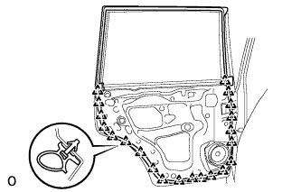 |
Attach the 21 clips to install the weatherstrip.
| 2. INSTALL REAR DOOR CHECK ASSEMBLY LH |
Apply MP grease to the sliding areas of the door check.
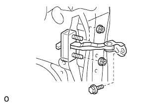 |
Install the door check to the door panel with the 2 nuts.
Apply adhesive to the threads of the bolt.
Install the bolt.
| 3. INSTALL REAR DOOR CHECK COVER LH |
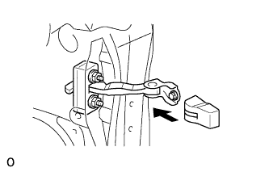 |
Install the door check cover.
| 4. INSTALL DOOR ELECTRICAL KEY OSCILLATOR (for Entry Function) |
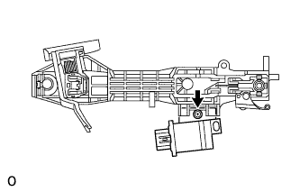 |
Install the door electrical key oscillator with the screw.
| 5. INSTALL NO. 4 ELECTRICAL KEY WIRE HARNESS (for Entry Function) |
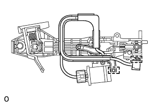 |
Connect the connector.
Attach the 2 clamps to install the wire harness to the frame.
| 6. INSTALL REAR DOOR OUTSIDE HANDLE FRAME SUB-ASSEMBLY LH |
Apply MP grease to the sliding parts on the rear door outside handle frame sub-assembly.
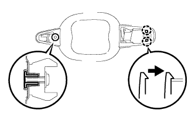 |
Attach the 2 claws to install the rear door outside handle frame sub-assembly.
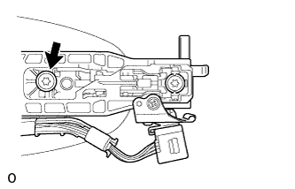 |
Using a T30 "TORX" wrench, install the front door outside handle frame sub-assembly with the screw.
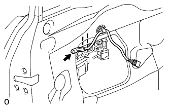 |
for Entry Function:
Attach the clamp.
| 7. INSTALL REAR NO. 2 DOOR OUTSIDE HANDLE PAD LH |
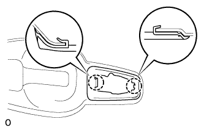 |
Attach the 2 claws to install the rear No. 2 door rear outside handle pad.
| 8. INSTALL REAR NO. 1 DOOR OUTSIDE HANDLE PAD LH |
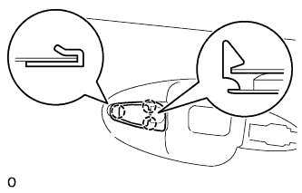 |
Attach the 3 claws to install the rear No. 1 door outside handle pad.
| 9. INSTALL REAR DOOR OUTSIDE HANDLE ASSEMBLY LH |
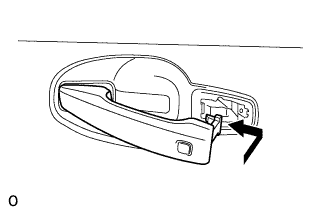 |
Insert the front end of the rear door outside handle assembly into the rear door outside handle frame.
Insert the rear end of the rear door outside handle assembly into the rear door outside handle frame. Next, slide the rear door outside handle assembly toward the front of the vehicle to install it.
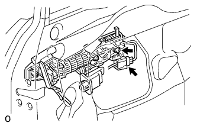 |
Using a T30 ''TORX'' socket, tighten the screw.
for Entry Function:
Connect the connector.
| 10. INSTALL REAR DOOR OUTSIDE HANDLE COVER LH |
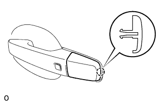 |
Attach the claw to install the rear door outside handle cover.
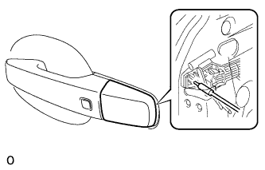 |
Using a T30 ''TORX'' socket, install the cover with the screw.
| 11. INSTALL REAR DOOR INSIDE LOCKING CABLE ASSEMBLY LH |
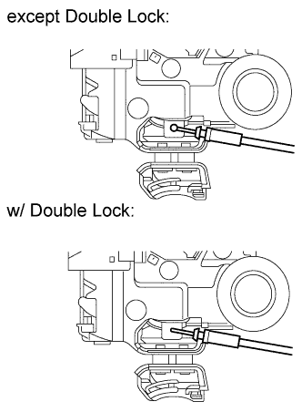 |
Install the rear door inside locking cable assembly.
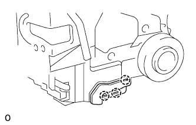 |
Attach the 3 claws.
| 12. INSTALL REAR DOOR LOCK REMOTE CONTROL CABLE ASSEMBLY LH |
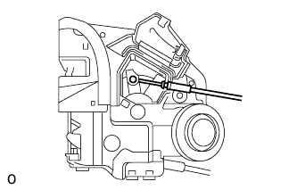 |
Install the rear door lock remote control cable assembly.
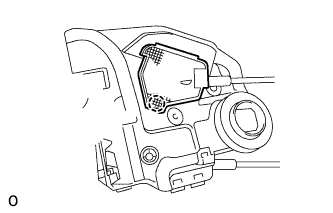 |
Attach the claw.
| 13. INSTALL REAR DOOR LOCK ASSEMBLY LH |
Apply MP grease to the sliding parts of the rear door lock assembly.
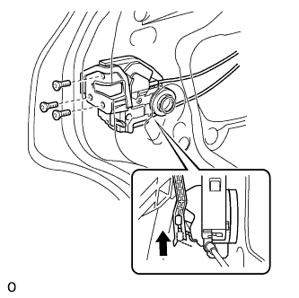 |
Insert the rear door lock assembly to the rear door outside handle release plate, and set it to the rear door panel.
Make sure that the rear door outside handle frame release plate is securely connected to the rear door lock assembly.
Using a T30 ''TORX'' wrench, install the door lock with the 3 screws.
| 14. INSTALL REAR DOOR LOCK CHILD PROTECTION COVER LH |
| 15. INSTALL REAR DOOR FRONT WINDOW FRAME MOULDING LH |
Clean the vehicle body surface.
Using a heat light, heat the vehicle body surface.
Remove the double-sided tape from the vehicle body surface.
Wipe off any tape adhesive residue with cleaner.
Install a new window frame moulding.
Using a heat light, heat a new window frame moulding and the vehicle body surface.
Remove the peeling paper from the face of the window frame moulding.
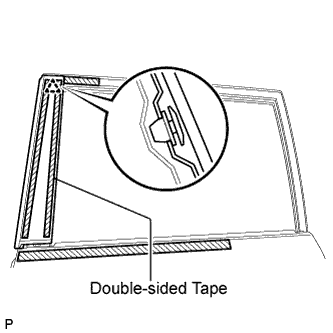 |
Attach the clip and double-sided tape to install the window frame moulding.
| 16. INSTALL REAR DOOR BELT MOULDING ASSEMBLY LH |
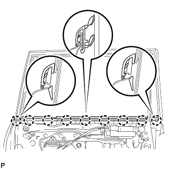 |
Attach the claw to install the belt moulding.
| 17. INSTALL REAR NO. 1 POWER WINDOW REGULATOR MOTOR ASSEMBLY LH |
Apply MP grease to the sliding and rotating areas of the regulator motor.
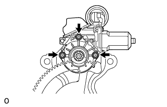 |
Using a T25 ''TORX'' driver, install the motor with the 3 screws.
| 18. INSTALL REAR DOOR WINDOW REGULATOR SUB-ASSEMBLY LH |
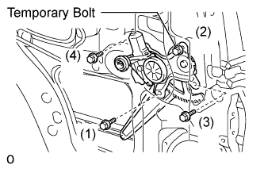 |
Apply MP grease to the sliding parts of the rear door window regulator sub-assembly.
Loosely install the temporary bolt onto the window regulator.
Insert the window regulator into the door panel. Use the temporary bolt to hang the window regulator on the door panel.
Temporarily install the window regulator with the 3 bolts.
Tighten the 4 bolts in the order shown in the illustration.
| 19. REMOVE REAR NO. 2 DOOR FRAME GARNISH LH |
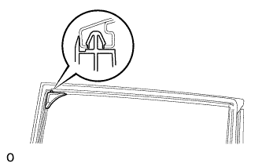 |
Attach a new clip to install the rear door frame garnish.
| 20. INSTALL REAR DOOR FRAME GARNISH LH |
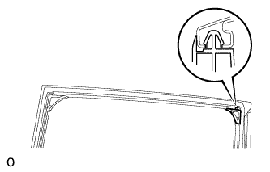 |
Attach a new clip to install the rear door frame garnish.
| 21. INSTALL REAR DOOR GLASS SUB-ASSEMBLY LH |
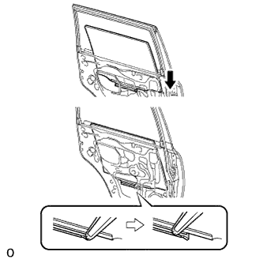 |
Slide the rear door glass sub-assembly as shown in the illustration to install it.
| 22. INSTALL REAR DOOR QUARTER WINDOW WEATHERSTRIP LH |
Install the rear door quarter window glass to the rear door quarter window weatherstrip.
| 23. INSTALL REAR DOOR QUARTER WINDOW GLASS LH |
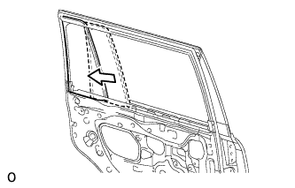 |
Install the quarter glass together with the rear door quarter window weatherstrip in the direction indicated by the arrow in the illustration.
| 24. INSTALL REAR DOOR REAR LOWER WINDOW FRAME SUB-ASSEMBLY LH |
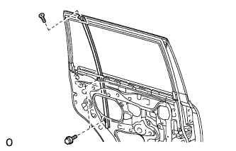 |
Install the rear door rear lower window frame with the 2 bolts and screw.
| 25. INSTALL REAR DOOR GLASS RUN LH |
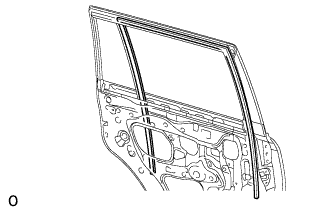 |
Install the rear door glass run.
| 26. INSTALL REAR DOOR PANEL PROTECTOR LH |
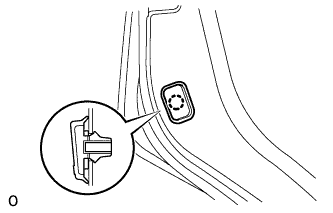 |
Attach the claw to install the door panel protector.
| 27. INSTALL REAR DOOR SERVICE HOLE COVER LH |
Apply butyl tape to the door.
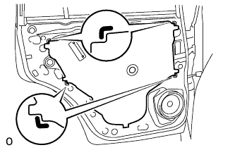 |
Pass the rear door lock remote control cable and rear door inside locking cable through a new rear door service hole cover.
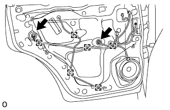 |
Connect the 2 connectors.
Attach the 6 clamps.
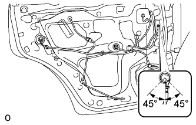 |
Install the bolt as shown in the illustration.
| 28. INSTALL REAR SPEAKER SET (w/ Rear Speaker) |
Temporarily install the speaker by attaching the claw of the speaker to the door panel.
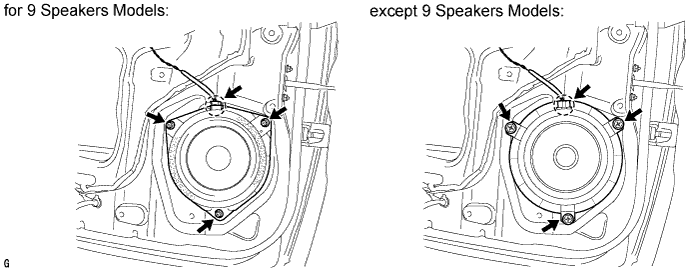
Install the speaker with the 3 screws.
Connect the connector.
| 29. INSTALL REAR INNER DOOR GLASS WEATHERSTRIP LH |
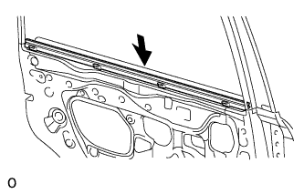 |
Install the rear inner door glass weatherstrip to the door panel.
| 30. INSTALL COURTESY LIGHT ASSEMBLY (w/ Courtesy Light) |
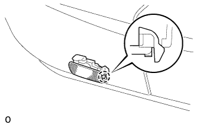 |
Connect the connector.
Attach the claw of the courtesy light to the rear door trim.
| 31. INSTALL REAR DOOR INSIDE HANDLE BEZEL LH |
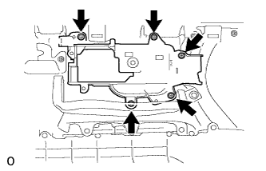 |
Install the rear door inside handle bezel to the trim board with the 5 screws.
| 32. INSTALL REAR DOOR INSIDE HANDLE SUB-ASSEMBLY LH |
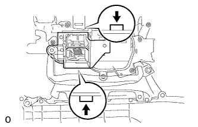 |
Attach the 2 claws to install the inside handle.
| 33. INSTALL REAR DOOR TRIM BOARD SUB-ASSEMBLY LH |
Connect the connector.
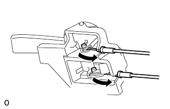 |
Connect the rear door lock remote control cable and rear door inside locking cable to the rear door inside handle sub-assembly.
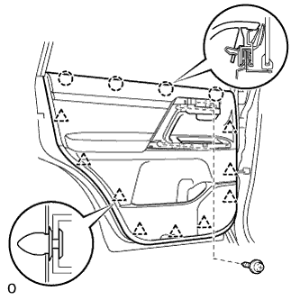 |
Attach the 4 claws and 9 clips to install the rear door trim board sub-assembly.
Install the 3 screws.
| 34. INSTALL ASSIST GRIP COVER LH |
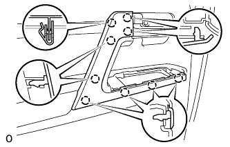 |
Attach the 9 claws to install the door assist grip cover to the door trim panel.
| 35. INSTALL REAR POWER WINDOW REGULATOR SWITCH ASSEMBLY |
Attach the 2 claws to install the window regulator switch.
| 36. INSTALL REAR DOOR ARMREST BASE PANEL ASSEMBLY LH |
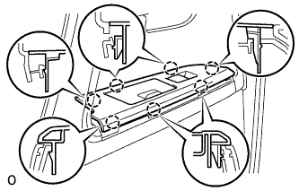 |
Connect the connector.
Attach the 7 claws to install the rear door armrest base panel.
| 37. INSTALL REAR DOOR INSIDE HANDLE BEZEL LH |
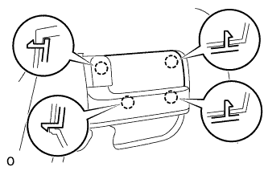 |
Attach the 4 claws to install the bezel.
| 38. CONNECT CABLE TO NEGATIVE BATTERY TERMINAL |